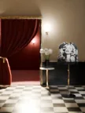
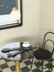
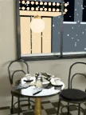
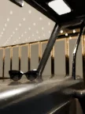
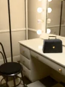
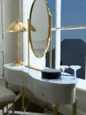

The film · Chapter I
a seat is kept for you
There is a cinema that runs one last show on Christmas Eve. One coat comes in out of the snow, and one seat in the front row is kept.
Fifteen seconds
the night, in seven beats
The net on the shoulder in the snow. The door opening by itself. The row and the kept seat. The sit. The lights up on the box. The coat on its rail in the morning. The lettering.
Coming attractions
the picture is tomorrow
What plays on the screen: each piece in the place it is going, with one place kept for someone. Reel One is the night out; Reel Two, the suite from day to the next morning.

STAND-IN · img/film/short-c1/master.* (C1, Heliodora: the coming attraction (until it lands, its last frame); 16:9, 3840 × 2160 MP4 or 8K still)
STAND-IN · img/film/short-c3/master.* (C3, Ritornelo: the coming attraction (until it lands, its last frame); 16:9, 3840 × 2160 MP4 or 8K still)
STAND-IN · img/film/short-c4/master.* (C4, Cordel: the coming attraction (until it lands, its last frame); 16:9, 3840 × 2160 MP4 or 8K still) STAND-IN · img/film/short-c5/master.* (C5, Öbolo: the coming attraction (until it lands, its last frame); 16:9, 3840 × 2160 MP4 or 8K still)
STAND-IN · img/film/short-c5/master.* (C5, Öbolo: the coming attraction (until it lands, its last frame); 16:9, 3840 × 2160 MP4 or 8K still)
STAND-IN · img/film/short-c6/master.* (C6, Öfusca: the coming attraction (until it lands, its last frame); 16:9, 3840 × 2160 MP4 or 8K still)
STAND-IN · img/film/short-c8/master.* (C8, Itaoca: the coming attraction (until it lands, its last frame); 16:9, 3840 × 2160 MP4 or 8K still) STAND-IN · img/film/short-c10/master.* (C10, Ödara: the coming attraction (until it lands, its last frame); 16:9, 3840 × 2160 MP4 or 8K still)
STAND-IN · img/film/short-c10/master.* (C10, Ödara: the coming attraction (until it lands, its last frame); 16:9, 3840 × 2160 MP4 or 8K still) STAND-IN · img/film/short-c11/master.* (C11, Alvor: the coming attraction (until it lands, its last frame); 16:9, 3840 × 2160 MP4 or 8K still)
STAND-IN · img/film/short-c11/master.* (C11, Alvor: the coming attraction (until it lands, its last frame); 16:9, 3840 × 2160 MP4 or 8K still) STAND-IN · img/film/short-c12/master.* (C12, Coaraci: the coming attraction (until it lands, its last frame); 16:9, 3840 × 2160 MP4 or 8K still)
STAND-IN · img/film/short-c12/master.* (C12, Coaraci: the coming attraction (until it lands, its last frame); 16:9, 3840 × 2160 MP4 or 8K still)
STAND-IN · img/film/short-c13/master.* (C13, Voluta: the coming attraction (until it lands, its last frame); 16:9, 3840 × 2160 MP4 or 8K still)The next reel
Up in the booth, the first reel came off the projector and another went on.